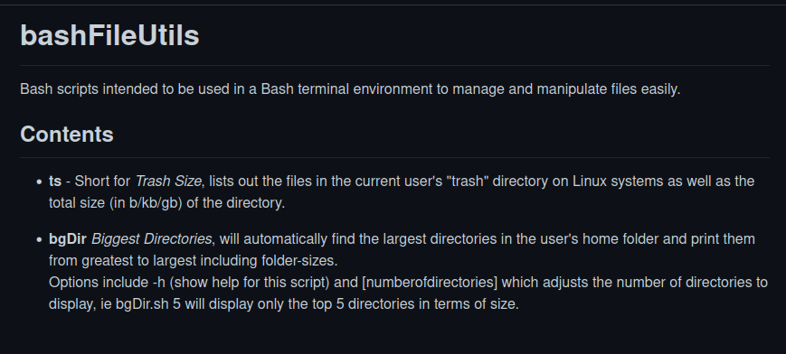

SimpleDictionary
A simple text-based dictionary program written in Python, with support for multiple dictionaries, search history, and advanced user-configuration options.
SimpleTimeClockCLI
A simple text-based time-tracking application with support for multiple time-formats, saving entries to text file output, and user configuration files.
SimpleTimeClock

A GUI time-tracking application written in Python using the Tkinter framework. Simple UI with support for large number of entries, supports saving and loading from text files.
Etch-And-Sketch.js
Small JavaScript experiment which supports drawing simple pixel-art on grids of up to 100x100 size.
ruby_chunks
Collection of simple ruby scripts which perform various tasks including a basic bubble sort, creating simple caesar ciphers, and playing tic-tac-toe in a terminal.
AngularTodo
Angular todo-list application written as a learning experiment in working with the Angular framework. Currently supports adding, deleting and completing simple text-based tasks.
HashNote
Console-based notetaking application making use of the Java HashMap implementation for storing and accessing text files.
bashFileUtils
Collection of bash scripts written to help with common file-system/file manipulation tasks in a bash-shell environment.
Kotlin-Utils
Simple programs written in Kotlin intended to be used in a terminal environment to perform tasks such as file sorting and displaying the date/time as a formatted calendar.
Projects & Experience:
I host the majority of my projects on Github, to check out a few of my favorite works, click the link here.